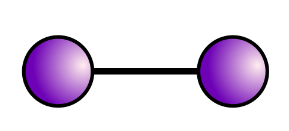
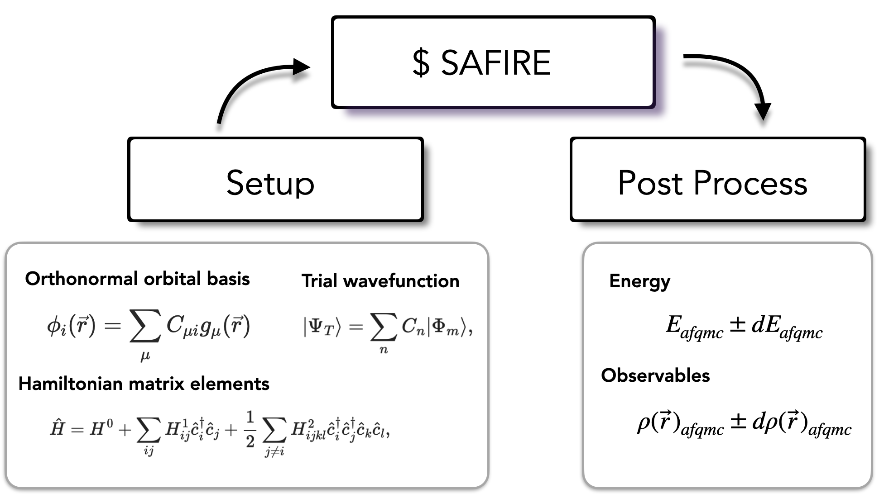

SAFIRE for Quantum Chemistry#
{kind=link}

This document is the entry point for learning how to use SAFIRE for quantum chemistry calculations. We will first go over the basics of setting up a calculation before branching out to more specific applications at the end.
Preliminaries#
Typical quantum chemistry calculations are performed in a basis of contracted Gaussian-type orbitals (cGTOs), \(g_\mu(\vec{r})\); however, AFQMC is formulated in the language of second quantization and requires an orthonormal basis. Some common choices of orthonormal basis are the set of canonical Hartree-Fock orbitals, or orthogonalized atomic orbitals, but in principle any set of orthonormal orbitals can be used. An orbital from the orthonormal orbital basis, \(\phi_i(\vec{r})\), is represented in the basis of cGTOs as,
The Hamiltonian is in turn expressed in the orthonormal orbital basis as
where, \(\hat{c}^{\dagger}_i\) (\(\hat{c}_i\)) create (annihilate) electrons in orbital \(\phi_i(\vec{r})\), \(H^0\) is a constant energy (typically from nuclear repulsion), \(H^1_{ij}\) are one-body matrix elements, and \(H^2_{ijkl}\) are electron-electron interaction matrix elements. All standard forms of quantum chemistry Hamiltonians can be written in this form.
The Hamiltonian#
In these tutorials, we will be using the standard Born-Oppenheimer Hamiltonian, unless otherwise stated, which is given in first quantization by
where, \(N_e\) is the number of electrons, \(\vec{r}_p\) is the position of electron \(p\), \(N_\mathrm{atom}\) is the number of atomic nuclei, and \(Z_A\) and \(\vec{R}_A\) are the atomic number and position, respectively, of atomic nuclei, \(A\). This Hamiltonian can be expressed in the language of second quantization by making the identifications,
is the constant nuclear repulsion energy,
contains the “one-body” kinetic term and electron-nuclei interactions, and
is the electron-electron interaction.
Trial wavefunctions#
A trial wavefunction is used in AFQMC which is, in general, some linear combination of Slater determinants,
where \(|\Phi_m\rangle\) are Slater determinants, and \(C_n\) is a coefficient. This can either be a configuration interaction-type expansion or a linear combination of nonorthogonal Slater determinants.
In the former case, it is convenient to specify Slater determinants in terms of occupation vectors as,
where \(O_\sigma = [o_0, o_1, ..., o_{N_\sigma}]\) is the set of orbitals which are occupied for \(\sigma=\alpha, \beta\).
In the later case, Slater determinants are often expressed explicitly by their respective Slater matrices, \([\Phi^\sigma_n]_{ip}\), where \(p\) is the electron index.
Common methods for computing a trial wavefunction include:
Hartree-Fock (HF)
Kohn-Sham density functional theory (DFT)
Complete-active space self-consistent field (CASSCF)
Semistochastic heatbath configuration interaction (SHCI)
among others.
Typical Workflow#
{kind=link}

SAFIRE reads \(\hat{H}\) in generic second-quantized form from an HDF5 file. This allows SAFIRE to use any Hamiltonian that can be expressed in this form. The afqmctools CLI tools / Python package can write a Hamiltonian to the SAFIRE format given arrays containing the matrix elements, or from the standard FCIDUMP format. If the optional dependency PySCF is installed, afqmctools is able to use PySCF’s interface to libcint to generate the required matrix elements.
The trial wavefunction is also read from an HDF5 file. Similar to the Hamiltonian, afqmctools includes tools for writing wavefunctions in this format as will be seen in the tutorials.
Software prerequisites#
Many mature quantum chemistry codes exist and are widely used in the quantum chemistry community. For this reason, SAFIRE does not implement common quantum chemistry methods, such as Hartree-Fock (HF), density functional theory (DFT), complete active space (CAS) methods, etc. Instead, SAFIRE is designed to use externally generated Hamiltonians and trial wavefunctions for easy integration into existing workflows.
To use SAFIRE, you will need a quantum chemistry code that can:
generate / output Hamiltonian matrix elements, \(H^0\), \(H^1_{ij}\), and \(H^2_{ijjkl}\). SAFIRE comes with a converter from the common FCIDUMP format to its internal format via afqmctools.
compute / output wavefunctions to use as trial wavefunctions. This can either be:
a list of CI coefficients, \(C_n\), and occupation strings \(O_\sigma = [o_0, o_1, ..., o_{N_\sigma}]\)
a set of CI coefficients, \(C_n\), with corresponding non-orthogonal Slater determinant Slater matrices, \([\Phi^\sigma_n]_{ip}\).
For all of tutorials except for Hello SAFIRE we assume that you have access to a quantum chemistry code that can do all of this. If you do not have access to a quantum chemistry code that can do all of this, PySCF is a possible choice which is free and open source. The tutorials will teach you how to input this information using the afqmctools CLI tools / python package.
The Tutorials#
The following tutorials will guide you through AFQMC calculations using SAFIRE in order to teach you the typical workflow, and some of the main features of SAFIRE. We assume that you are familiar with typical quantum chemistry calculations in a standard cGTO basis including Hartree-Fock, and CAS-methods. We also assume that you have access to a quantum chemistry code that can output a FCIDUMP file and that you are familiar with using it. Each tutorial builds on the previous one. We recommend going through them in order.
See also
Worked examples for Quantum Chemistry / Molecules